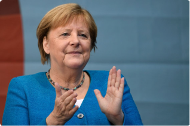

Angela Merkel, un pilier du féminisme politique
Angela Merkel est certes l'actuelle chancelière allemande, mais elle a effectué de nombreux engagements qui aujourd'hui, la positionnent comme un pilier du féminisme.
Un statut plus que mérité ?
Angela Merkel est dans un premier temps la première femme avec 10 années passées en tant que chancelière allemande, ce qui lui confère déjà une grande place dans la société allemande ou dans le féminisme. De plus, elle a également procédé à des études scientifiques avant son poste actuel, la fusion entre ses compétences intellectuelles et sa puissance politique lui permet d'obtenir une place de "leadeuse" parmi l'Union Européenne. Durant l'été 2015, alors que des réfugiés Syriens désespérés affluaient en Europe, Angela Merkel a pris une décision rapidement et inhabituellement de les laisser accéder au pays allemand à environ 1 million de réfugiés, un acte de générosité audacieux qui a remonté les cœurs, déconcerté l'Etat islamique et fait de Merkel la personnalité de l'année. Mais cela a également déclenché une réaction anti-immigrés.
Angela Merkel, un modèle pour toutes et tous ?
Comme cita l'apprentie Kristin Auf der Masch "il y a plein de femmes à mon niveau, et il y a Angela Merkel. Il n'y a pas beaucoup de femmes entre les deux", de par son soin que l'on a vu à l'œuvre avec ses actions expliquées précédemment mais aussi c'est la seule femme qui renvoie des effets positifs au pouvoir dans la vie de la population, que ça soit au travail ou encore dans la représentation publique. Comme prononça cette apprentie, par le biais de ces actions, de sa personnalité, Angela Merkel représente un modèle pour toutes et tous, pour la population mondiale.
Son trio de femmes
Nous remarquons que dans ce statut de chancelière, Angela Merkel aime travailler avec les femmes. Les proches collaboratrices, les conseillères Eva Christiansen et Beate Baumann étaient une équipe remarquable selon Angela Merkel. Après 12 ans au pouvoir, le monde entier connaît Angela Merkel et ses 2 proches pour leur trio politique. Elles se sont rencontrées lorsqu'une jeune ministre était à l'hôpital avec une jambe cassée, épuisée par la politique, avec un besoin pressant d'une assistante compétente. Depuis cet accident et cette rencontre, ce trio ne se s’est plus jamais lâché et forme une puissance colossale pour l'Allemagne.
De par son statut de chancelière, Angela Merkel possède la place d'un trône parmi le féminisme par le biais de ses actions, de ses décisions.
Glossaire
Chancelière : Le titre de chancelier est synonyme de ministre de la Justice, garde des Sceaux
Sources
time.com
information.tv5monde.com